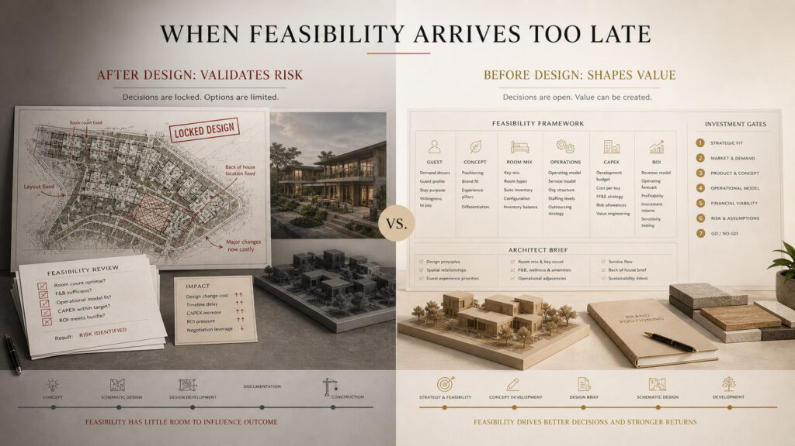
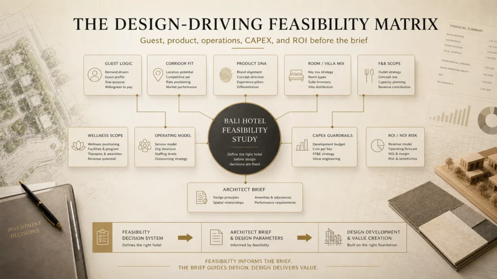
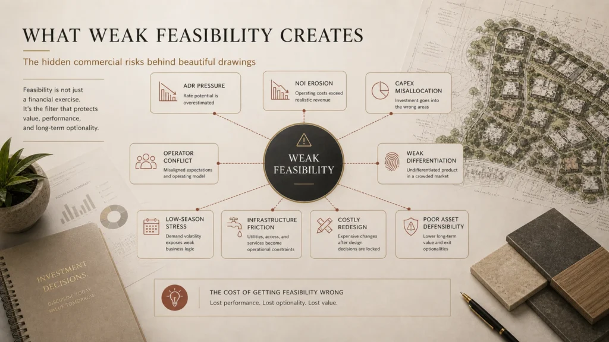

A Bali hotel feasibility study should not begin after the architect has already shaped the product. It should start before key count, room mix, F&B scope, wellness space, back-of-house logic, circulation, and design ambition become embedded in drawings.
Many Bali hotel projects become risky earlier than owners expect. The risk often starts when an owner asks an architect to design a hotel, resort, villa estate, or wellness asset before the guest, rate logic, facility burden, operating model, and investment gates are clear.
Late feasibility can still test the numbers. It can still support a lender memo. It can still warn the owner that the project may not perform. However, once the drawings already carry major business decisions, the study loses much of its power to shape the product at the point where shaping is cheapest.
That is why the most valuable Bali hotel feasibility study is not only a market report. It is a pre-design commercial program.
Key Takeaways
A serious Bali hotel feasibility study should happen before the architectural brief is finalized, not after the concept is visually fixed.
Bali demand remains strong, but performance is uneven by corridor, rate tier, season, guest type, infrastructure capacity, and future supply.
Feasibility should define the guest, positioning, room mix, facility scope, F&B and wellness logic, operating model, CAPEX guardrails, and go/no-go gates.
The architect should not be excluded. The architect should receive a brief based on tested commercial logic, not investor enthusiasm alone.
A feasibility study that cannot explain which design decisions increase or destroy return is not yet a planning tool.
Why a Bali Hotel Feasibility Study Matters Now
Bali Demand Is Strong, But Not Simple
Bali remains one of Southeast Asia’s most powerful hospitality markets. However, generic “luxury,” “wellness,” or “lifestyle” positioning can no longer absorb weak development logic.
The Bali Hotel & Branded Residences 2026 report by Horwath HTL, C9 Hotelworks, and Bali Hotels Association reported that Bali reached about 6.95 million international arrivals in 2025. The same report recorded overall hotel occupancy in the low-to-mid 70% range, ADR around IDR 2.35 - 2.4 million, and an active hotel pipeline of 5,641 rooms across 45 hotels.
Official data also confirms that Bali’s economic platform remains strong. BPS Bali reported that Bali’s economy grew 5.82% in 2025, while Accommodation and Food & Beverage Services expanded 10.25%.
Seasonality Still Affects the Business Case
Strong demand does not remove feasibility risk.
BPS reported that Bali received 502,205 foreign tourist visits in January 2026 and 492,289 in February 2026, while star-hotel occupancy moved from 56.67% in January to 55.44% in February. That early-year reset shows that seasonality still matters. Source: BPS Tourism Overview of Bali Province, February 2026.
The market is not weak. It is more complex than many development processes allow for.
Owners should therefore treat a Bali hotel feasibility study as a strategic design input, not a late-stage approval document.
The Core Problem: Feasibility Often Arrives Too Late
The Wrong Question Comes Too Late
Many owners order feasibility after they already have a site idea, a preferred architectural direction, a rough key count, a room or villa mix, a lobby concept, a restaurant dream, a wellness idea, and investor-facing visuals.
At that stage, the feasibility study is asked to answer the wrong question:
“Can this already-imagined project make money?”
The better question is earlier and harder:
“What project should this site support, for which guest, at which price point, with which operating model, and within which investment limits?”
That difference matters.
Conventional Feasibility Is Useful, But Often Too Narrow
HVS describes hotel feasibility and market study work through familiar components: occupancy and average rate forecasts, income and expense forecasts, market supply and demand analysis, and reports that can be presented to investors and lenders.
This work is useful. But if it starts after the product is already shaped, it often becomes a validation exercise instead of a design-driving tool.
Cornell’s hotel development material makes the sequencing issue clear. Hotel programming defines activities, allocates space, and establishes relationships between spaces. As the project moves through feasibility, the program becomes the basis for schematic design.
In plain terms: the commercial program should inform the design brief before design momentum becomes expensive.
This is also why Zenith has argued separately that a hotel feasibility study is wrong when ADR and occupancy are treated as fixed certainties instead of stress-tested assumptions.

What Most Owners and Investors Get Wrong
Many Bali hospitality projects are not destroyed by one bad decision. A sequence of decisions made in the wrong order usually weakens them.
1. They Confuse Land Potential With Project Feasibility
A strong Bali location does not automatically support every hospitality concept.
A site in Canggu, Ubud, Uluwatu, Nusa Dua, Sanur, Tabanan, or Pererenan may each require a different guest, stay pattern, arrival sequence, facility burden, staffing model, rate strategy, and operator structure.
The correct question is not:
“Is this a good location?”
The correct question is:
“What hospitality product can this location defend?”
This is one of the most common Bali hotel investment risks: the land is attractive, but the hospitality product is not specific enough.
2. They Define Luxury Visually, Not Commercially
In Bali, “luxury” often appears as a design description before the owner has tested it as a rate strategy.
That is dangerous.
Luxury needs guest demand, service intensity, operational consistency, privacy, spatial generosity, F&B quality, wellness credibility, maintenance discipline, and brand trust.
Without those elements in the feasibility logic, a project may look premium while operating like an expensive generic asset.
This is why Bali boutique hotel brand strategy must connect design, guest promise, operations, and ROI from the beginning.
3. They Overbuild Non-Room Space Without Proving Capture
Restaurants, wellness areas, spas, gyms, lounges, event spaces, retail, and beach clubs can strengthen the business case.
They can also destroy it.
A hotel feasibility study Bali owners can rely on must test whether non-room spaces generate external demand, lift ADR, improve length of stay, support membership or local capture, or simply create CAPEX, payroll, maintenance, and management complexity.
The question is not whether a restaurant, spa, or wellness area looks good in the render.
The question is whether it earns its space.
4. They Ignore Low-Season Operating Reality
A Bali project may look attractive in July, August, and festive season.
That does not mean the operating model works in February, March, or shoulder periods.
The right feasibility study must test low-season outlet hours, staffing flexibility, variable cost behavior, local capture, direct booking strength, and whether the product has reasons to exist outside peak travel demand.
If the project only works in peak season, it is not yet commercially ready.
5. They Treat the Operator Decision as a Later Step
Operator strategy should influence feasibility early.
A branded operator, independent operator, lease model, hotel management agreement, residence rental pool, club membership model, or owner-operated structure can all change space planning, staffing, systems, approval rights, pre-opening cost, and revenue strategy.
Projects designed before the operator logic is clear often need correction later.
This is why Zenith consistently frames Bali hotel investment risk around market, compliance, operating resilience, and contract governance - not only purchase price.
What a Bali Hotel Feasibility Study Must Decide Before Design
Feasibility Must Shape the Design Brief
A design-driving feasibility study does not only ask whether a hotel is feasible. It decides what must be true for the project to be feasible.
A proper Bali hotel feasibility study should connect market demand, guest behavior, Product DNA, spatial logic, F&B and wellness scope, operating model, staffing reality, CAPEX discipline, ADR potential, NOI risk, and design implications before the architectural brief is finalized.
The Design-Driving Feasibility Matrix
| Decision Area | Feasibility Question | Design Implication | Commercial Risk if Ignored |
|---|---|---|---|
| Target guest | Who will choose this asset, in this location, at this rate? | Room type, privacy, arrival, amenities, stay rhythm | Weak ADR and low conversion |
| Corridor fit | What does this micro-market actually reward? | Key count, density, facility mix, access logic | Generic positioning |
| Product DNA | What is the asset’s reason to exist? | Spatial hierarchy, guest journey, service rituals | No market defensibility |
| Room/villa mix | What inventory mix supports rate and occupancy? | Unit size, view logic, family/couple mix, storage | Wrong basis per key |
| F&B scope | Is F&B a guest amenity, local destination, or profit center? | Kitchen, access, seating, section closure | Dead space or margin drag |
| Wellness scope | Is wellness brand image or real demand capture? | Treatment rooms, wet areas, recovery, clinical boundary | Overbuilt wellness CAPEX |
| Service model | What staffing intensity does the promise require? | Back-of-house, staff flow, laundry, storage | Payroll pressure and service drift |
| Seasonality | How does the project perform in weak months? | Flexible spaces, outlet hours, local use | Peak-season-only economics |
| Infrastructure | Can the site support reliable operations? | Water, waste, power, access, drainage | Guest dissatisfaction and operating disruption |
| Investment gates | What is the maximum basis the concept can justify? | Design ambition, phasing, value engineering | ROI dilution and owner conflict |
The Output Should Be a Commercial Program
The study should produce a commercial program that the architect can use.
Not a vague narrative. Not a generic “upper-upscale resort” label. Not a mood board.
A decision framework.
This is also where hotel Product DNA becomes commercially important. Product DNA is not branding language. It is the operating code that connects guest, promise, positioning, spatial logic, service model, and financial outcome.

Bali Market Signals That Should Shape the Design Brief
Bali Is a Portfolio of Submarkets
Bali is not one hospitality market. It is a portfolio of submarkets with different demand engines.
A serious hotel development feasibility Bali process should not treat Nusa Dua, Ubud, Canggu, Jimbaran, Uluwatu, Sanur, and Kuta as interchangeable.
Corridor Signals for Feasibility
| Corridor Signal | What It Suggests for Feasibility |
|---|---|
| Nusa Dua: high occupancy, MICE and leisure strength | Test meeting/event support, arrival scale, group flow, banquet logistics, and resort operating efficiency. |
| Ubud: rate-led experiential market | Test wellness depth, narrative strength, arrival choreography, view/privacy logic, and disciplined key count. |
| Jimbaran/Uluwatu: high ADR but premium supply pressure | Test defensible luxury, privacy, signature F&B/wellness, and CAPEX ceiling. |
| Canggu/Tabanan: lifestyle demand, weaker benchmarking, major pipeline | Separate durable demand from rebound noise, supply distortion, and brand hype. |
| Legian/Kuta/Tuban: mature beach-hub demand | Test operating efficiency, family/convenience logic, flow, accessibility, and value discipline. |
| Sanur: maturing coastal market | Test long-stay, wellness, residential hospitality, accessibility, and older/newer demand segmentation. |
Different Corridors Require Different Product Logic
The same concept cannot simply be copied across the island.
A project in Ubud may need narrative depth and experiential discipline. Nusa Dua may require group handling, meeting logic, and highly efficient resort operations. Uluwatu may depend on privacy, view monetization, and premium differentiation. Canggu may need sharper proof that lifestyle demand can survive pipeline pressure and infrastructure friction.
A pre-design feasibility study should translate these market signals into the architectural brief.
The Zenith View: Feasibility as the Owner’s Commercial Program
Zenith’s operator-first view is simple:
A Bali hotel feasibility study should not only prove whether the project can work. It should define the project that deserves to be designed.
That means feasibility must sit between the owner’s investment intent and the architect’s design brief.
Seven Outputs the Owner Should Require
A proper owner-side feasibility pack should produce seven outputs.
1. Demand Brief
This defines target guest, source markets, stay length, seasonality, rate band, direct competition, alternative accommodation pressure, and local capture potential.
2. Positioning Thesis
This creates one clear statement of who the asset is for, why they will choose it, and what makes the rate proposition credible.
3. Product DNA Inputs
This translates concept into guest promise, service tone, spatial logic, emotional value, wellness role, F&B role, and differentiation.
4. Program Guardrails
This defines key count, room/villa mix, gross area logic, public area scope, back-of-house expectations, F&B and wellness scope, event logic, and external-demand assumptions.
5. Operating Model
This sets the brand route, management structure, staffing intensity, outlet hours, pre-opening needs, systems, SOPs, owner approvals, and operator responsibilities.
6. Commercial Model
This tests ADR, occupancy, RevPAR, ancillary revenue, GOP/NOI logic, payroll sensitivity, CAPEX ceiling, ramp-up period, and downside cases.
7. Investment Gates
This defines go/no-go triggers, redesign triggers, value-engineering rules, and points where the concept should be stopped before more capital is spent.
This is where Zenith differs from a generic design-led process.
The architect should help translate the concept into a physical asset. But the commercial logic should not be invented through drawings.
For projects where design and operations need to work together from day one, Zenith’s view is also aligned with the logic explained in our article on architect and hospitality consultant collaboration in Bali.
Operational Implications
Feasibility Must Test the Real Operation
A feasibility study that drives design must look at how the asset will actually operate.
The study should test:
- how guests arrive, move, wait, check in, and transition into the experience;
- how housekeeping reaches rooms or villas without damaging the guest journey;
- how kitchens, laundry, waste, storage, receiving, and staff areas support the service promise;
- whether F&B can open, close, section, and staff intelligently in low months;
- whether wellness, spa, gym, or longevity spaces have the right ratio of treatment rooms, recovery areas, wet areas, consultation space, and back-of-house support;
- whether the project can maintain service quality without overstaffing;
- whether the owner’s design ambition creates a staffing or maintenance burden the P&L cannot carry.
These are not secondary details.
They shape guest satisfaction, payroll, maintenance, energy use, owner approvals, training requirements, and operating risk.
Bali Adds Infrastructure Friction
In Bali, operational reality also includes access, traffic, utilities, waste handling, water pressure, drainage, service access, staff movement, and maintenance practicality.
If feasibility ignores those realities, they return later as guest complaints, payroll inefficiency, owner frustration, and margin erosion.

Commercial Implications
Design Decisions Become Financial Decisions
Design decisions become financial decisions once built.
A weak feasibility process can create four commercial problems.
| Commercial Problem | How It Happens | Likely Result |
|---|---|---|
| ADR pressure | Concept lacks enough differentiation for the planned rate | Discounting, OTA dependence, weak direct booking |
| NOI erosion | Space, staffing, and service model become too heavy | Payroll and operating costs outrun revenue |
| CAPEX misallocation | Owner funds visible design before testing revenue logic | Beautiful but commercially weak asset |
| Operator conflict | Design and business model do not match operating reality | Owner-operator disputes and costly corrections |
Hotel ROI Bali Assumptions Need Stress Testing
The strongest feasibility study does not create the most optimistic forecast. It prevents the owner from building a product the market, operator, or P&L cannot support.
This is especially important for hotel ROI Bali assumptions. In a competitive market, small changes in ADR, occupancy, payroll, F&B capture, utility costs, maintenance reserve, and OTA dependency can materially change the owner’s outcome.
The point is not to make the project smaller, cheaper, or less ambitious.
The point is to make every major design and development decision commercially accountable.
What To Do Before Committing Capital
Owners Need Seven Answers Before Design Moves Too Far
Before briefing the architect for serious schematic work, owners should require a feasibility pack that answers seven questions.
1. What Guest Is the Project Built For?
Not “luxury traveler.” Not “wellness tourist.” Not “digital nomad.”
The study must define the actual demand segment, travel motivation, stay behavior, willingness to pay, and reason to choose this asset over alternatives.
2. What Is the Rate Logic?
The study must explain why the target ADR is credible.
That requires a competitive set, corridor performance, product comparison, brand/operator assumptions, seasonality, and guest-value logic.
3. What Is the Correct Key Count and Inventory Mix?
More keys do not automatically improve feasibility.
The right mix depends on site capacity, privacy, view logic, staffing, market demand, and rate strategy.
4. Which Facilities Are Essential, Optional, or Dangerous?
F&B, wellness, spa, gym, recovery, retail, event, and club spaces should be classified by role:
- ADR support;
- ancillary revenue;
- external demand;
- owner branding;
- operational burden.
If the role is unclear, the space is not yet justified.
5. What Operating Model Does the Project Require?
A project should not be designed before the owner understands whether it needs a brand, independent operator, management agreement, lease, residence rental structure, membership model, or hybrid operating platform.
6. What Is the CAPEX Ceiling?
The study must identify the maximum development basis the projected income can support.
Design ambition should live within that ceiling unless the owner consciously accepts a lower return.
7. What Are the No-Go Triggers?
A serious feasibility study should include conditions that stop the project, force redesign, reduce scope, change positioning, or require a different operating model.
No-go triggers protect capital. They also protect the owner from emotional design momentum.
FAQ
What Is a Bali Hotel Feasibility Study?
A Bali hotel feasibility study tests whether a proposed hotel, resort, villa estate, wellness asset, or mixed-use hospitality project can work commercially on a specific site. It should review demand, competitive positioning, rate potential, key count, facility mix, operating model, CAPEX logic, revenue assumptions, and investment risk. The best version is not only a financial forecast. It becomes the commercial brief that guides design and development decisions.
When Should a Hotel Feasibility Study Be Done?
A hotel feasibility study should begin before the architectural brief is finalized. The architect can be involved early, but the owner should first define the guest, concept, market position, facility scope, operating model, and investment limits. If feasibility starts after drawings are advanced, it may still validate the economics, but it loses much of its ability to shape the project.
Is a Market Study the Same as a Feasibility Study?
No. A market study typically focuses on demand, supply, competitive set, occupancy, and rate potential. A feasibility study should go further by testing income, expenses, investment basis, return logic, operating assumptions, and project risk. For Bali hospitality development, the strongest study also links those findings to design decisions, facility programming, Product DNA, and operator strategy.
Why Is Bali Feasibility Different From a Normal Hotel Market?
Bali has strong demand, but performance varies by corridor, product type, season, rate tier, infrastructure capacity, and supply pressure. A project in Ubud, Uluwatu, Canggu, Nusa Dua, Sanur, Tabanan, or Pererenan can require a different guest logic, facility mix, operating model, and ADR strategy. A generic hotel feasibility template can miss those differences.
Should the Architect Wait Until Feasibility Is Finished?
Not completely. The architect can join early discussions and help identify site and design constraints. Serious schematic design, however, should follow a tested commercial program. The problem is not early architect involvement. The problem is allowing design to define the business model before feasibility has tested what the site and market can support.
What Should Owners Ask Zenith to Review First?
Owners should ask Zenith to review the site logic, target guest, corridor fit, concept positioning, key count, room/villa mix, F&B and wellness scope, operating model, CAPEX ceiling, revenue logic, and go/no-go gates before committing to full design development. This helps ensure the architect receives a commercially disciplined brief rather than a visual ambition without operating proof.
Summary Takeaways
A Bali hotel feasibility study should not be treated as a late investor document.
It should be the owner’s first commercial control tool.
The study should define what the project is, who it is for, what it can charge, how it will operate, what it should include, what it should avoid, and which design decisions support or undermine long-term return.
Bali still offers serious hospitality opportunity. But the next cycle will reward sharper products, stronger operating logic, better site discipline, and more realistic underwriting.
The projects that win will not be the ones with the most attractive renders.
They will be the ones where feasibility, Product DNA, operating model, and design brief were aligned before the first serious drawings began.
CTA
Before you brief the architect, commit to schematic design, or raise capital around a Bali hospitality concept, ask Zenith Hospitality Global to review the project from an owner-side, operator-first perspective.
Zenith helps owners, investors, and developers test the commercial logic of hospitality projects before design decisions become expensive: site fit, Product DNA, guest logic, facility scope, operating model, CAPEX guardrails, revenue assumptions, and investment gates.
Start a conversation